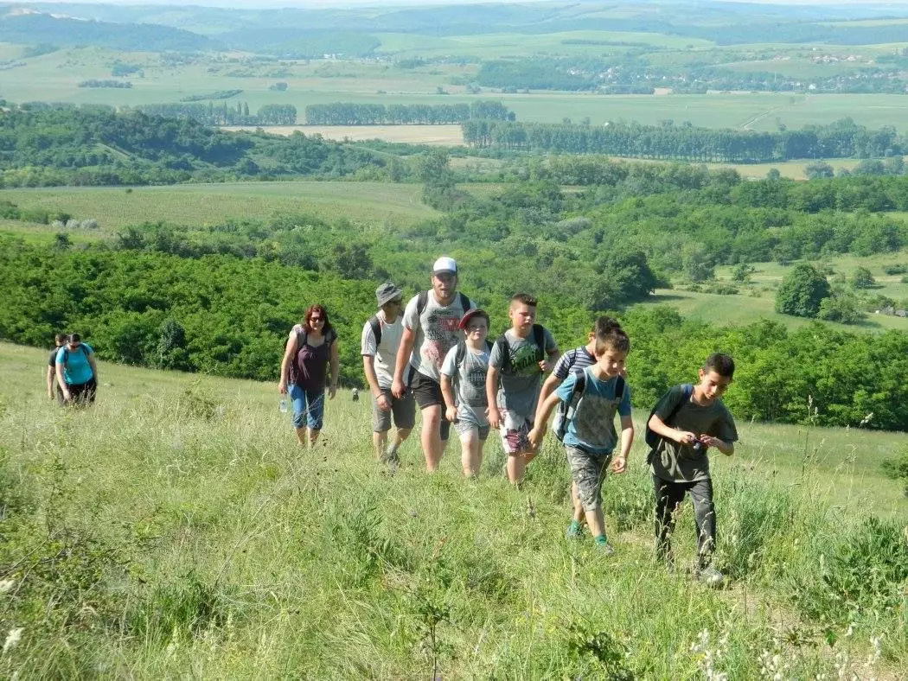
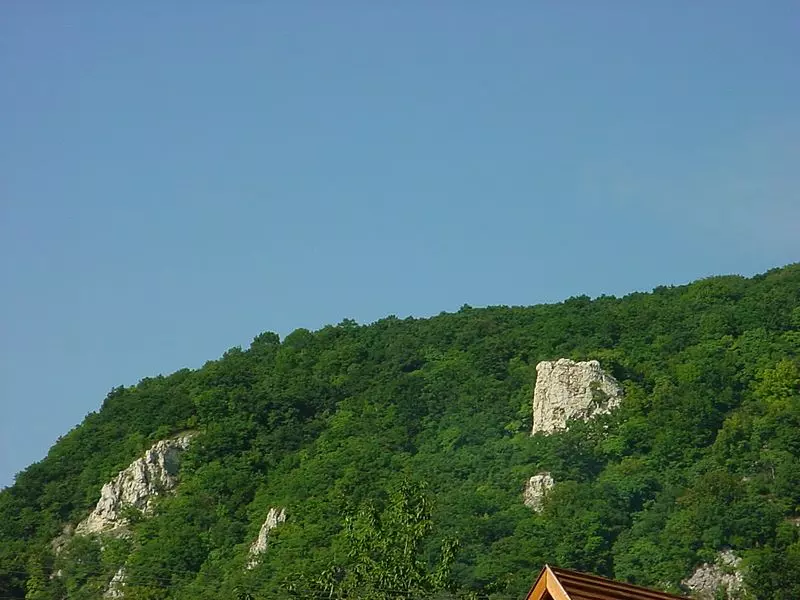
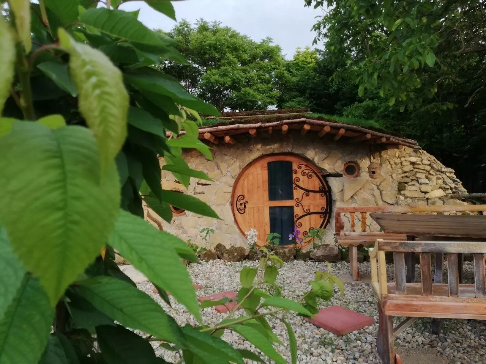

Ha tegyük fel, kesztölci szállást foglaltok, első túrátok vezessen a Háromszázgarádicsra! Az út a meredek és látványos Kétágú-hegyen át vezet az 574 méter magas csúcsra. Nem véletlen a neve; az utolsó emelkedőt megtehetitek egy lépcsőn is. Számoljátok meg, valóban 300! A tetején pedig pihegjétek ki a mászást a nem véletlen Sasfészeknek hívott turistaház teraszán! Ha nem túráznátok saját szakállatokra, szintén részt vehettek vezetett túrán a Pilisben.

A pálosok egyik korábbi lakhelyéről, Klastrompusztáról éritek el. A zöld kereszt jelzésről elérhető Kémény-szikláról bámulatos kilátás nyílik a 10-es út völgyére. Innen egy ugrás Magyaroszág egyik legnagyobb barlangrendszere, az Ariadne-barlangrendszer. Látogatható, de időben jelentkezzetek be! Ha kimásztatok a föld alól, lejöttetek a szikláról, csodáljátok meg a kesztölci levendulást !

Szerintem a Csobánka fölötti Oszolyról nyílik a Pilis-tetőre az egyik legszebb kilátás. Persze nem csak ezért kihagyhatatlan pilisi látnivaló a nyugatra néző, hosszú sziklafal. Oszoly sziklái a főváros környéki sziklámászók egyik legfontosabb helyszínei. Ha ti is másztok, ne hagyjátok otthon a felszerelést! A közeli Ürömön pedig Zsákos Frodóként lakhattok a Hobbit Ház apartmanjában. Ez is egy pilisi látnivaló.